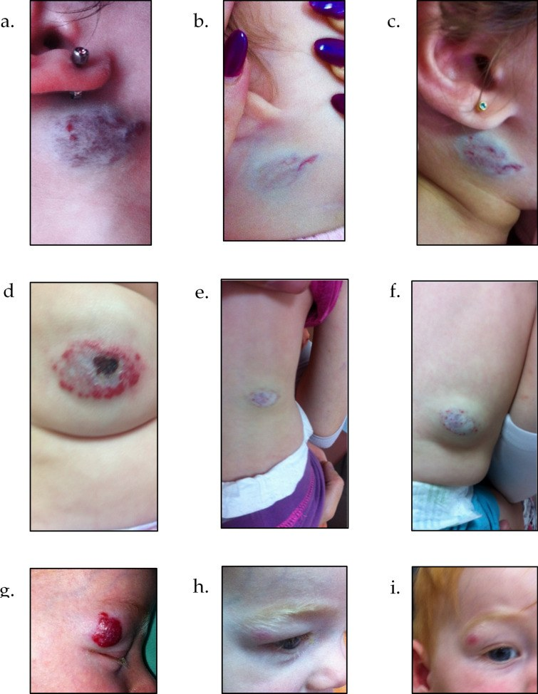
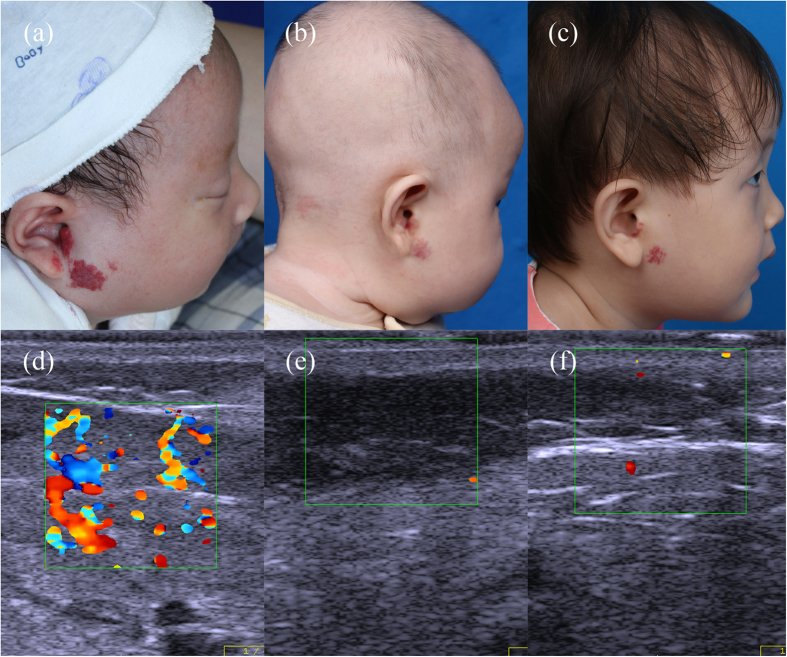
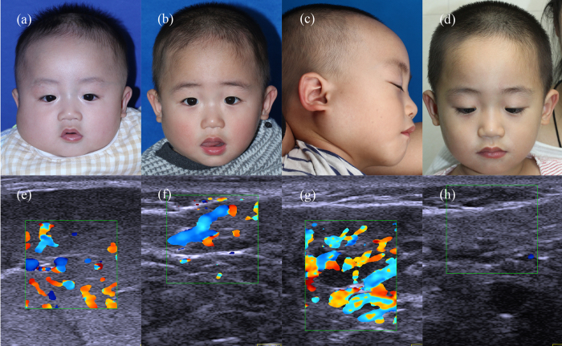

3072 — Tái phát u máu nhũ nhi sau ngừng propranolol: ai có nguy cơ, giảm liều thế nào, khi nào dùng lại
Tags: pattern:tai-phat pattern:u-mau vung:da-dau-mat-co vung:than-minh anatomy:da protocol:propranolol protocol:sieu-am-Doppler score:rebound-risk
Mức chắc chắn (certainty): tổng hợp y văn (literature synthesis) — ghép phân tích gộp 10 nghiên cứu/1.662 trẻ (J Clin Med 2025, PMC12607970), đoàn hệ 301 trẻ điều trị ≥ 6 tháng (Adv Ther 2025, PMC11782296), nghiên cứu 149 trẻ ngừng thuốc theo mức hồi quy trên siêu âm Doppler (Sci Rep 2017, PMC5320547) và loạt 232 u máu (Skin Res Technol 2023, PMC10234167). Không có ca do nhóm tự chụp.
Câu hỏi thực hành: bé gái 10 tháng, u máu đoạn tính vùng mang tai đã dùng propranolol 8 tháng, nay u phẳng, nhạt màu, còn ít mạch trên siêu âm. Bố mẹ hỏi: "Ngừng được chưa? Ngừng đột ngột hay giảm dần? Nếu mọc lại thì sao?" Bài chốt năm quyết định: (1) tái phát (rebound) là chuyện thường gặp — gộp 20% (15–24%), 11% phải dùng lại thuốc; (2) yếu tố dự báo mạnh nhất KHÔNG phải tuổi ngừng mà là MỨC HỒI QUY lúc ngừng — hết ≥ 90%: tái phát 5,3%, còn < 90%: 26,9%; (3) giảm liều 2–4 tuần, và duy trì thêm 3 tháng sau khi đạt mức hồi quy tối đa tốt hơn 1 tháng (OR 1,86); (4) nữ và u vùng đầu–cổ có nguy cơ cao hơn (OR 1,76 và 2,40), u ở chi ít tái phát; (5) tái phát hầu như xuất hiện trong 1–3 tháng đầu sau ngừng → hẹn khám lại đúng lúc, dùng lại thuốc vẫn hiệu quả.
1. Tổng quan bệnh học – cơ chế hình ảnh: vì sao u mọc lại sau khi ngừng thuốc
- Bản chất u và vì sao propranolol có tác dụng: u máu nhũ nhi (infantile hemangioma, IH) là tăng sinh tế bào nội mô mạch, GLUT-1 dương, gặp ở 4–10% trẻ. Propranolol chặn β-adrenergic → co mạch, giảm VEGF/bFGF, tăng apoptosis tế bào nội mô và tế bào gốc u. Thuốc kiểm soát chứ không diệt hết: sau khi ngừng, một lượng tế bào gốc u còn lại có thể vào lại chu kỳ tăng sinh → rebound growth (PMC11014660).
- TẠI SAO "rebound" không phải "thất bại điều trị": trong pha tăng sinh (0–5 tháng) u cần renin–angiotensin và yếu tố tăng trưởng tại chỗ; propranolol hạ renin và làm tế bào "ngủ". Khi thuốc rút, trục renin hồi phục nhanh hơn tốc độ thoái triển tự nhiên → u đỏ lại, dày lại, có khi vượt kích thước cũ. Vì vậy đáp ứng lại thuốc lần 2 vẫn tốt ở phần lớn trẻ (PMC12607970).
- Tần suất — con số phải nhớ: gộp 10 nghiên cứu, 1.662 trẻ, tỉ lệ tái phát 20% (KTC 95%: 15–24%; I² = 85%); tái phát nặng phải dùng lại propranolol 11% (9–14%) (PMC12607970). Các loạt đơn lẻ báo 6–30%, đoàn hệ 301 trẻ của Israel chỉ 12,6% (38/301) nhờ phác đồ ngừng chặt (PMC11782296), đoàn hệ 679 trẻ Thượng Hải 13,5% (92/679) (PMC5320547).
- TẠI SAO mức hồi quy lúc ngừng là yếu tố mạnh nhất (vật lý của siêu âm): mô u còn hoạt tính thì còn mao mạch thành mỏng, tốc độ dòng thấp–trung bình, biểu hiện trên siêu âm Doppler màu là còn mạch trong tổn thương; mô đã thoái triển thay bằng mô xơ–mỡ không mạch. Nghiên cứu 149 trẻ chia theo mức hồi quy ≥ 90% so với < 90% tại thời điểm ngừng:
- Tái phát 5,3% (2/38) vs 26,9% (24/111) (PMC5320547).
- Lúc ngừng: độ dày 0,12 ± 0,07 cm vs 0,38 ± 0,12 cm, mật độ mạch 1,7 ± 0,8 vs 4,1 ± 1,3 mạch/cm².
- Nhóm hồi quy hoàn toàn ngừng thuốc sớm hơn (tuổi 9,8 ± 3,6 vs 16,9 ± 4,1 tháng) mà vẫn ít tái phát hơn — bằng chứng rằng thời gian dùng thuốc dài không thay được mức hồi quy.
- Loạt 232 u máu củng cố cùng quy luật: sau 1 tháng ngừng thuốc, tái phát 5% (2/40) ở nhóm hồi quy hoàn toàn và 22% (11/50) ở nhóm hồi quy một phần (PMC10234167).
- Yếu tố nguy cơ theo phân tích gộp (đã hiệu chỉnh/thô): nữ OR 1,76 (1,20–2,59); đầu–cổ OR 2,40 (1,59–3,63); vùng mặt OR 3,48 (1,65–7,36). Ngược lại thể loại u, phân bố đoạn tính, thời gian điều trị và tuổi bắt đầu điều trị KHÔNG có ý nghĩa trong gộp (PMC12607970).
- U ở chi ít tái phát nhất: trong 301 trẻ, chỉ 1 ca tái phát ở nhóm u chi (p < 0,001); u ở chi cũng đáp ứng tốt hơn (PMC11782296). Cơ chế được giải thích bằng nguồn gốc phôi khác nhau và mật độ mô đệm — điểm này khớp với quan sát ở hội chứng PHACE/LUMBAR (bài 3073).
- Loét không làm tăng tái phát: 10,5% ở nhóm tái phát vs 13,3% ở nhóm không tái phát (p = 0,079) (PMC11782296) — đừng vì "đã loét" mà kéo dài thuốc vô hạn.
- Thời điểm tái phát — quyết định lịch hẹn: trong loạt 232 u máu, các ca tái phát được phát hiện sau 1 tháng ngừng thuốc (PMC10234167); theo các loạt, phần lớn tái phát xuất hiện trong 1–3 tháng đầu. Vì vậy mốc khám 1 tháng quan trọng hơn mốc 6 tháng.
2. Mẫu hình + chẩn đoán phân biệt của "tổn thương xuất hiện lại" sau ngừng propranolol (Gamut)
- Mẫu hình 1 — rebound thật (u mọc lại): đúng vị trí u cũ, đỏ lại, ấm, dày lên, có thể lan ra ngoài bờ cũ; siêu âm: giảm âm, có mạch trong tổn thương, độ dày tăng so với lúc ngừng. Thường trong 1–3 tháng đầu.
- Mẫu hình 2 — tồn dư xơ–mỡ (residual fibrofatty tissue): vùng nhạt màu, mềm, phẳng, có thể giãn mạch mảnh; siêu âm không có mạch đáng kể, độ dày không tăng theo thời gian. Đây không phải tái phát; can thiệp là laser/ phẫu thuật thẩm mỹ (bài 3071).
- Mẫu hình 3 — da teo/anetoderma, sẹo: sau loét hoặc u lớn; không đỏ, không ấm, chỉ là di chứng.
- Mẫu hình 4 — nhiễm/loét tái phát tại chỗ: sưng, đau, chảy dịch; "to ra" do phù–viêm chứ không phải mô u; cần cấy + chăm sóc ướt (bài 3071).
- Mẫu hình 5 — KHÔNG phải IH: u mới cứng, tím, lan rộng, không đáp ứng propranolol → nghĩ KHE (kaposiform hemangioendothelioma) với Kasabach–Merritt (tiểu cầu thấp, fibrinogen thấp) hoặc sarcoma mô mềm nhũ nhi.
- Gamut theo vị trí (ai dễ tái phát):
- Đầu–cổ, đặc biệt vùng mặt/mang tai — nguy cơ cao nhất (OR 2,40; mặt OR 3,48).
- Thân, nếp gấp, vùng hậu môn–sinh dục — nguy cơ trung bình, thêm nguy cơ loét.
- Chi — nguy cơ thấp nhất (1 ca/301).
- Đường giữa thắt lưng–cùng cụt — ngoài nguy cơ tái phát, phải sàng lọc LUMBAR (bài 3073).
- Gamut theo "vì sao tái phát" — dùng để chọn xử trí:
- Ngừng khi chưa hồi quy đủ (nguyên nhân số 1) → dùng lại, kéo dài tới khi ≥ 90%.
- Ngừng quá sớm theo tuổi (u còn ở pha tăng sinh) → dùng lại tới 12–18 tháng tuổi.
- Giảm liều quá nhanh → dùng lại và giảm chậm 2–4 tuần.
- Liều chưa tối ưu (dưới 2 mg/kg/ngày) → tăng tới 2 mg/kg/ngày.
- U đoạn tính/PHACE–LUMBAR → tổn thương rộng, tồn dư nhiều, cần theo dõi dài (bài 3073).
3. Bảng so sánh phân biệt (ma trận đối chiếu)
| Thực thể (entity) | Hình ảnh lâm sàng / siêu âm điển hình | Chốt vào (rule-in) | Chốt loại (rule-out) | Gợi ý xác nhận |
|---|---|---|---|---|
| Rebound IH | Đúng vị trí cũ, đỏ–dày lại trong 1–3 tháng; siêu âm: giảm âm + có mạch trong tổn thương, độ dày tăng | Độ dày/mật độ mạch tăng so với lúc ngừng thuốc | Không có mạch, không dày thêm sau 3 tháng → không phải rebound | Siêu âm Doppler so với ảnh lúc ngừng |
| Tồn dư xơ–mỡ | Mảng nhạt, mềm, phẳng ± giãn mạch mảnh; siêu âm tăng âm, không mạch | Kích thước ổn định ≥ 3 tháng | Đỏ lại + dày lên + có mạch → rebound | Theo dõi 3 tháng; laser/thẩm mỹ nếu cần |
| Di chứng loét/sẹo | Da teo, trắng bóng, co kéo; không ấm, không đau | Tiền sử loét + không thay đổi theo thời gian | Sưng nóng đỏ + chảy dịch → nhiễm | Khám da; không cần siêu âm |
| Nhiễm tại chỗ | Đau, phù, mủ, viền đỏ lan, sốt | Mủ/mùi + cấy dương | Không mủ, không sốt, chỉ đỏ đều → rebound | Cấy mủ, CRP nếu nặng |
| KHE (Kaposiform) | Mảng tím, cứng, lan rộng, không tự thoái triển; siêu âm dày, mạch lớn | Giảm tiểu cầu + fibrinogen thấp + D-dimer cao | Tiểu cầu bình thường + đáp ứng propranolol | CBC, đông máu, MRI |
| Sarcoma mô mềm nhũ nhi | Khối cứng, cố định, lớn nhanh, không đỏ kiểu u máu | Không đáp ứng propranolol 4–8 tuần + MRI xâm lấn | Mềm, đỏ, đáp ứng beta-blocker | MRI + sinh thiết |
| U máu mới (không liên quan) | Vị trí khác u cũ, xuất hiện muộn | Vị trí mới + GLUT-1 dương | Đúng vị trí cũ → rebound | Lâm sàng; sinh thiết rất hiếm cần |
- Ảnh đối chiếu dùng trong quiz: chuỗi 9 panel tái phát (PMC11782296-F2), u hồi quy hoàn toàn ngừng 2 tuần ổn định 23 tháng (PMC5320547-F1), u hồi quy một phần tái phát sau 1 tháng (PMC5320547-F3).
4. Protocol ngừng thuốc – theo dõi – xử trí tái phát
- Đo trước khi quyết định (bắt buộc): siêu âm Doppler màu đầu dò thẳng 12–15 MHz đo độ dày tối đa (mm), mật độ mạch (/cm²), so với ảnh trước điều trị; chụp ảnh có thước. Đây là "ngưỡng khách quan" thay cho cảm nhận bằng mắt.
- Tiêu chuẩn ngừng (theo bằng chứng):
- Hồi quy ≥ 90% so với trước điều trị (hoặc không còn tổn thương rõ trên siêu âm); hoặc
- Đã đạt mức hồi quy tối đa và duy trì ≥ 3 tháng (duy trì 3 tháng tốt hơn 1 tháng: tái phát OR 1,86; tái phát nặng OR 2,57).
- Thường sau 12 tháng tuổi với u đã hồi quy tốt; không cần chờ "hết hẳn" nếu siêu âm đã ≥ 90%.
- Cách ngừng: giảm liều từ từ 2–4 tuần; nhóm hồi quy hoàn toàn giảm trong 2 tuần, nhóm còn một phần giảm trong 4 tuần (PMC5320547). Giảm đột ngột không làm tăng tái phát trong nghiên cứu duy nhất so sánh trực tiếp, nhưng không được khuyến cáo vì nguy cơ bùng phát và tác dụng cường adrenergic khi cai (PMC12607970).
- Lịch theo dõi sau ngừng: khám + đo lại 1 tháng, 3 tháng, rồi 6–12 tháng; chụp ảnh mỗi lần. 1 tháng là mốc bắt buộc vì phần lớn tái phát xuất hiện trong tháng đầu.
- Khi có tái phát:
- Dùng lại propranolol khởi đầu 1 mg/kg/ngày, tăng tới 2 mg/kg/ngày (liều 2 mg/kg cho đáp ứng xuất sắc 57,8%, tốt hơn 3 mg/kg trong đoàn hệ 301 trẻ, p = 0,007; lưu ý nhiễu do ca nặng dùng liều cao).
- Timolol gel 0,5% tại chỗ 2–3 lần/ngày chỉ khi tổn thương nông ≤ 3 mm và ≤ 3 cm (bài 3071).
- Tiếp tục tới 12–18 tháng tuổi, giảm liều 2–4 tuần, duy trì 3 tháng sau mức hồi quy tối đa rồi mới ngừng lại.
- Tái phát nhiều lần / không đáp ứng → siêu âm lại, cân nhắc MRI để loại KHE/u khác, và laser PDL cho tổn dư nông.
- Sơ đồ quyết định:
flowchart TD
A[Đang dùng propranolol, cân nhắc ngừng] --> B[Siêu âm Doppler: độ dày + mật độ mạch]
B --> C{Hồi quy ≥ 90% so với trước điều trị?}
C -->|Có| D[Giảm liều 2 tuần rồi ngừng]
C -->|Không| E{Đã đạt hồi quy tối đa và duy trì ≥ 3 tháng?}
E -->|Chưa| F[Tiếp tục 2 mg/kg/ngày, đo lại mỗi 1–3 tháng]
E -->|Rồi| G[Giảm liều 4 tuần rồi ngừng, hẹn 1 tháng]
D --> H[Khám + siêu âm lại 1 và 3 tháng]
G --> H
H --> I{Đỏ lại, dày lên, có mạch?}
I -->|Không| J[Theo dõi 6–12 tháng, xử lý tồn dư thẩm mỹ]
I -->|Có| K[Dùng lại 1 → 2 mg/kg/ngày + timolol nếu nông]
K --> L{Tái phát lần 2 hoặc không đáp ứng?}
L -->|Không| F
L -->|Có| M[Siêu âm/MRI loại KHE, cân nhắc PDL/phẫu thuật]
5. Biến thể bình thường và cạm bẫy
- "Tái phát = điều trị thất bại" — sai. Tái phát gặp ở 1/5 trẻ và đáp ứng lại thuốc ở đa số; thông điệp này quyết định việc bố mẹ có tuân thủ lần 2 hay không (PMC12607970).
- Đo bằng mắt thay vì siêu âm: u phẳng, nhạt màu vẫn có thể còn mạch 4,1/cm²; ngừng theo cảm nhận là nguyên nhân tái phát phổ biến nhất. Luôn đo độ dày + mật độ mạch.
- Nhầm tồn dư xơ–mỡ với tái phát: tồn dư không dày thêm, không có mạch; điều trị bằng laser/phẫu thuật, không phải tăng propranolol.
- Nhầm giãn mạch tồn tại (telangiectasia) với u sống: giãn mạch mảnh, không tăng thể tích; theo dõi, không tăng liều.
- Kéo dài thuốc vô hạn vì sợ tái phát: propranolol có tác dụng phụ (hạ đường huyết, nhịp chậm, rối loạn giấc ngủ — bài 3069); ngừng đúng lúc theo mức hồi quy ≥ 90% + duy trì 3 tháng.
- Tưởng liều 3 mg/kg phòng tái phát tốt hơn: trong đoàn hệ 301 trẻ, 2 mg/kg lại gắn với đáp ứng xuất sắc hơn; ca nặng thường được dùng 3 mg/kg nên có nhiễu chỉ định. Không tăng liều chỉ để "phòng".
- Bỏ mốc khám 1 tháng: tái phát sớm nhất đã thấy sau 1 tháng; hẹn 3–6 tháng là bỏ lỡ cửa sổ điều trị dễ nhất.
- Không chụp ảnh có thước: mất khả năng so sánh khách quan giữa các lần; đây là lỗi hồ sơ hay gặp.
- Quên sàng lọc hội chứng: u đoạn tính đầu–mặt/cổ → PHACE; u đường giữa thắt lưng–cùng cụt → LUMBAR (bài 3073); tái phát ở nhóm này thường dai dẳng vì tổn thương rộng.
6. Tự lượng giá — Blind Quiz ngay trên trang tĩnh
Ca 1 — Ba kiểu "mọc lại" sau ngừng thuốc

- Gợi ý lâm sàng: ba trẻ (a–c: vùng mang tai; d–f: thân; g–i: quanh mắt) đã dừng propranolol.
- Câu hỏi: Panel nào là trước điều trị, panel nào sau khi ngừng, panel nào tái phát? Dấu hiệu nào phân biệt tái phát với tồn dư?
Bấm để hiện đáp án (findings + chẩn đoán)
- Dấu hiệu: a, d, g = trước điều trị (u đỏ, dày); b, e, h = sau khi ngừng (phẳng, nhạt); c, f, i = tái phát — đỏ và dày trở lại đúng vị trí, ở (f) và (i) rõ nốt gồ.
- Chẩn đoán: rebound growth sau ngừng propranolol. Chốt: đỏ lại + dày lên + có mạch trên Doppler, khác tồn dư xơ–mỡ (phẳng, không mạch, không tiến triển).
- Xử trí: dùng lại 1 → 2 mg/kg/ngày, hẹn khám lại 1 tháng; tổn dư nông có thể timolol.
- Nguồn ảnh: Adv Ther 2025, PMCID PMC11782296, Figure 2 — CC BY-NC 4.0.
Ca 2 — Ngừng khi đã hết hoàn toàn

- Gợi ý lâm sàng: bé gái 6 tuần, u máu hỗn hợp vùng mang tai phải; dùng propranolol 3 tháng.
- Câu hỏi: Vì sao ngừng được sớm như vậy? Giảm liều trong bao lâu? Kết quả sau 23 tháng nói lên điều gì?
Bấm để hiện đáp án (findings + chẩn đoán)
- Dấu hiệu: (b) không còn tổn thương rõ trên lâm sàng và siêu âm Doppler; (c) phẳng, không tái phát sau 23 tháng.
- Chẩn đoán: hồi quy hoàn toàn (≥ 90%) — nhóm này tái phát chỉ 5,3% (2/38). Giảm liều 2 tuần rồi ngừng.
- Bài học: quyết định ngừng dựa trên mức hồi quy, không dựa vào tuổi hay thời gian dùng thuốc.
- Nguồn ảnh: Sci Rep 2017, PMCID PMC5320547, Figure 1 — CC BY 4.0.
Ca 3 — Ngừng khi còn một phần: cái giá sau 1 tháng

- Gợi ý lâm sàng: bé trai 4 tháng, u máu sâu vùng mang tai phải; dùng propranolol 11 tháng, đạt giảm tối đa > 3 tháng, giảm liều 4 tuần.
- Câu hỏi: Ảnh (b) có đủ tiêu chuẩn ngừng không? Vì sao (c) xuất hiện? Lần này nên làm gì khác?
Bấm để hiện đáp án (findings + chẩn đoán)
- Dấu hiệu: (b) còn tổ chức giảm âm, dày 0,38 cm, mạch 4,1/cm² — hồi quy < 90%; (c) đỏ và dày lại sau 1 tháng.
- Chẩn đoán: rebound growth ở nhóm hồi quy một phần (tái phát 26,9%). Xử trí: dùng lại propranolol, kéo dài tới khi ≥ 90% và duy trì 3 tháng rồi mới ngừng.
- Nguồn ảnh: Sci Rep 2017, PMCID PMC5320547, Figure 3 — CC BY 4.0.
Bài liên quan chéo
- 3069 – An toàn propranolol ở nhũ nhi: liều đầu, theo dõi, ngừng thuốc
- 3071 – U máu nhũ nhi loét: propranolol + timolol + laser, sẹo về sau
- 3073 – Hội chứng LUMBAR: u máu đường giữa + dị tật tủy sống
- 3005 – U máu dưới thanh môn ở nhũ nhi
- 3048 – U máu gan ở nhũ nhi
Không dùng để chẩn đoán độc lập khi chưa có người hướng dẫn.